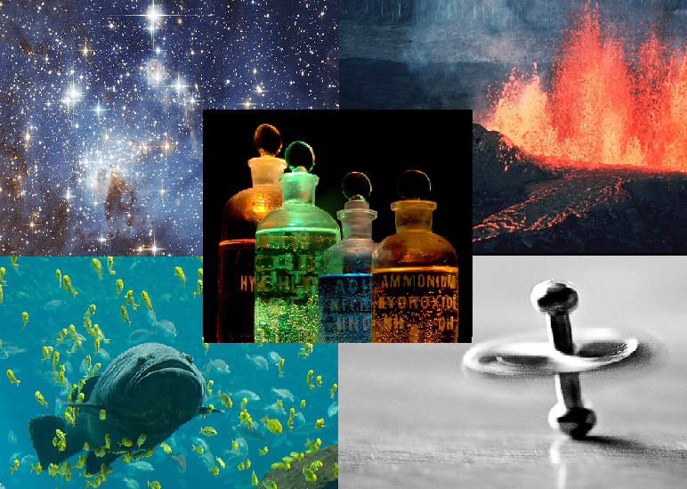
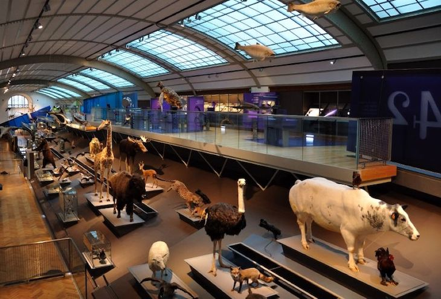
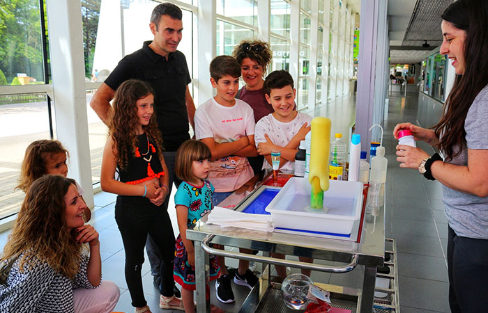

Bienvenido al Museo de Ciencias Naturales

Bienvenidos al Museo de Ciencias Naturales, un espacio dedicado a explorar la riqueza y diversidad de la vida en nuestro planeta. A través de nuestras exhibiciones interactivas, colecciones de fósiles, minerales y especímenes de fauna y flora, te invitamos a descubrir los secretos de la naturaleza y cómo los seres vivos han evolucionado a lo largo de millones de años. Nuestro museo es un lugar para todas las edades, donde el conocimiento científico se convierte en una experiencia emocionante y educativa.
Exposiciones

Nuestras exposiciones están diseñadas para ofrecerte una experiencia inmersiva en el fascinante mundo de las ciencias naturales. Desde la evolución de la vida en la Tierra hasta los ecosistemas más diversos y sorprendentes, cada exposición te llevará en un viaje lleno de descubrimientos. Contamos con exhibiciones temporales que exploran temas actuales y emergentes en la ciencia, así como colecciones permanentes que destacan los hallazgos más impresionantes de nuestro planeta. Ven a explorar, aprender y maravillarte con la increíble biodiversidad y la historia natural que nos rodea. ¡Hay algo nuevo para descubrir en cada visita!
Curiosidades

¿Sabías que el fósil más antiguo de nuestra colección tiene más de 500 millones de años? Además, en el museo encontrarás la réplica de un esqueleto de dinosaurio que mide más de 12 metros de largo. Y no solo eso, también podrás aprender cómo ciertos insectos son capaces de comunicarse a través de vibraciones o por qué algunos minerales brillan en la oscuridad. Cada rincón de nuestro museo está lleno de asombrosas curiosidades que harán que veas el mundo natural con otros ojos.
Experimentos para niños

En la sección de experimentos para niños, la curiosidad y la diversión se unen para despertar el interés por la ciencia. Aquí, los más pequeños pueden participar en actividades interactivas que les permiten aprender a través del juego. Desde descubrir cómo se forman los volcanes hasta crear sus propios circuitos eléctricos, cada experimento está diseñado para que los niños exploren conceptos científicos de manera práctica y emocionante. ¡Ven a jugar, experimentar y descubrir el científico que llevas dentro! Es una aventura educativa para toda la familia.